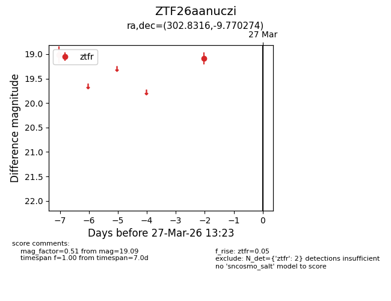
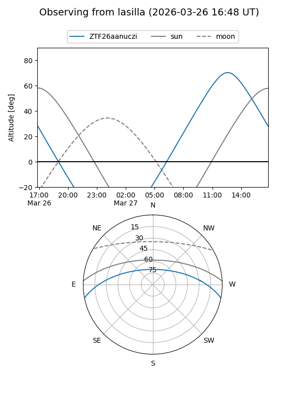
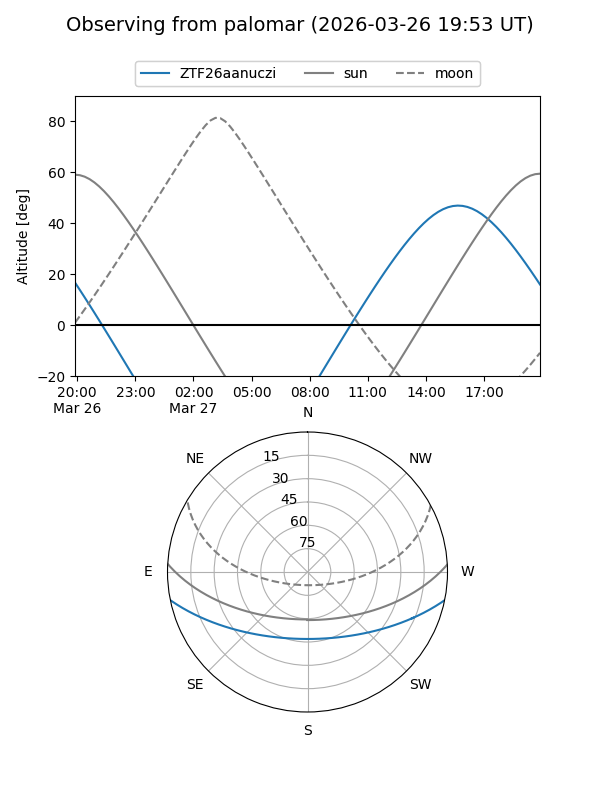

ZTF26aanuczi
Target ZTF26aanuczi at 2026-03-27 13:25
Aliases and brokers:
FINK: link
Lasair: link
ALeRCE: link
alt names
ZTF26aanuczi (ztf,fink_ztf)
Coordinates:
equatorial (ra, dec) = 302.8316,-9.77027
equatorial (HMS+DMS) = 20:11:19.59,-09:46:12.98
galactic (l, b) = (33.0840,-22.14539)
Flags:
Photometry:
last ztfr=19.09
2 ztfr detections
Lightcurve

Visibility


Additional plots